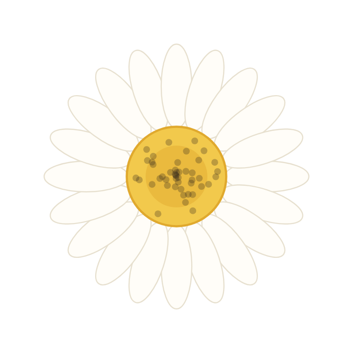
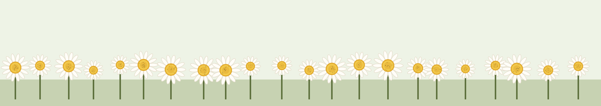
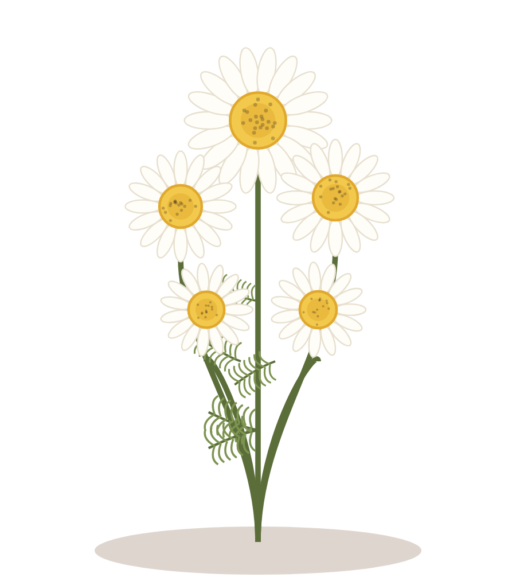
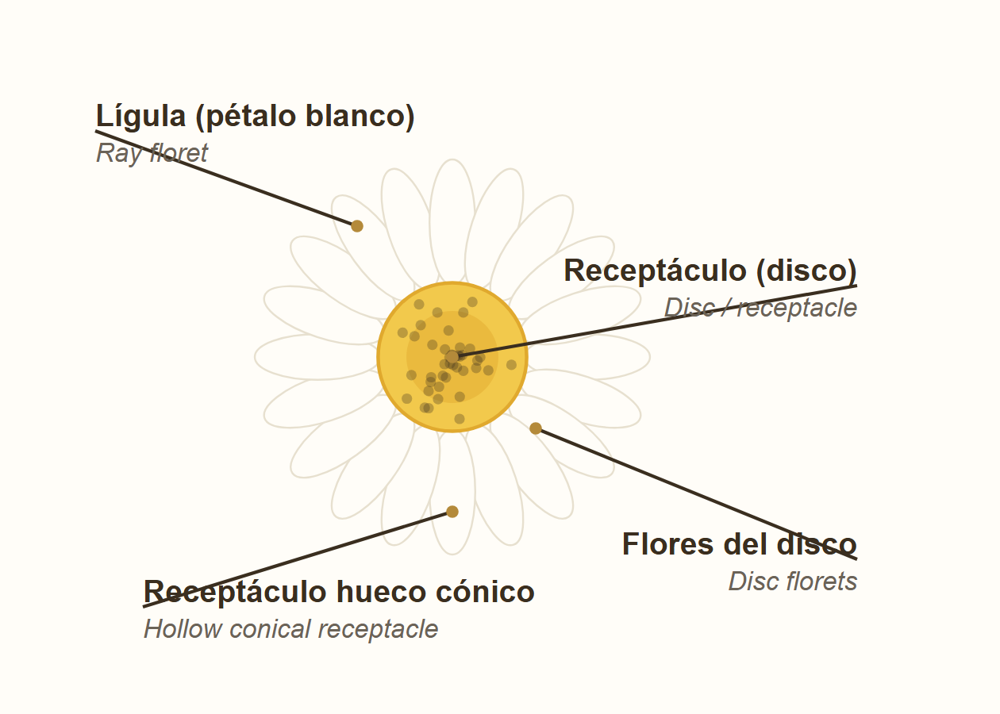
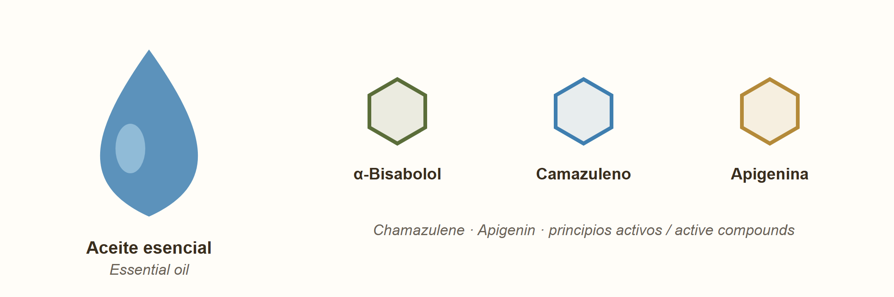
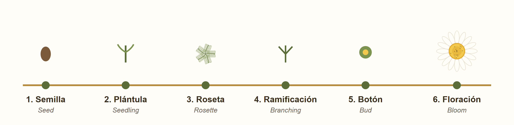
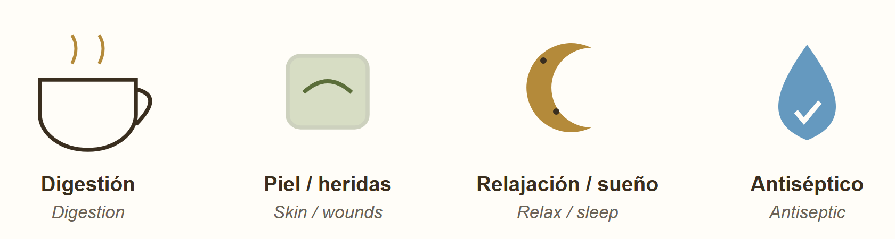
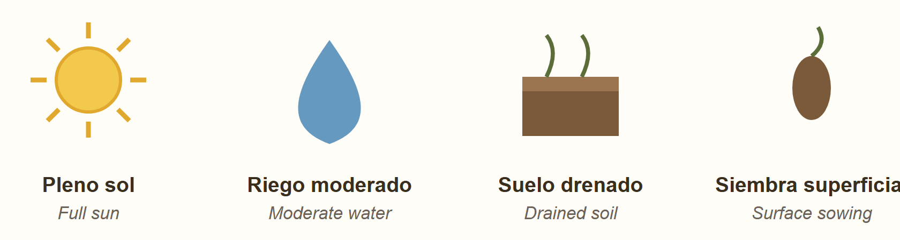

Planta de Matricaria chamomilla: tallos ramificados, hojas pinnadas y cabezuelas.Matricaria chamomilla plant: branched stems, pinnate leaves and flower heads.

Anatomía de la cabezuela (rasgo distintivo: receptáculo hueco y cónico).Flower-head anatomy (key trait: hollow, conical receptacle).
La manzanilla común o manzanilla alemana es la especie Matricaria chamomilla L. (sinónimos aceptados: Matricaria recutita y Chamomilla recutita). Es una planta herbácea anual perteneciente a la familia Asteraceae (compuestas). No debe confundirse con la manzanilla romana (Chamaemelum nobile, antes Anthemis nobilis), que es perenne.
| Categoría | Clasificación |
|---|---|
| Reino | Plantae |
| División | Magnoliophyta (angiospermas) |
| Clase | Magnoliopsida (dicotiledóneas) |
| Orden | Asterales |
| Familia | Asteraceae |
| Género | Matricaria |
| Especie | M. chamomilla L. |
Carácter distintivo: el receptáculo floral es hueco y cónico, lo que separa a la manzanilla alemana de plantas parecidas.
Common chamomile or German chamomile is the species Matricaria chamomilla L. (accepted synonyms: Matricaria recutita and Chamomilla recutita). It is an annual herbaceous plant of the Asteraceae (daisy) family. It should not be confused with Roman chamomile (Chamaemelum nobile, formerly Anthemis nobilis), which is perennial.
| Rank | Classification |
|---|---|
| Kingdom | Plantae |
| Division | Magnoliophyta (angiosperms) |
| Class | Magnoliopsida (dicots) |
| Order | Asterales |
| Family | Asteraceae |
| Genus | Matricaria |
| Species | M. chamomilla L. |
Distinctive trait: the flower receptacle is hollow and conical, which separates German chamomile from look-alike plants.

Principios activos: aceite esencial y compuestos clave.Active principles: essential oil and key compounds.
La actividad de la manzanilla se debe a un conjunto de compuestos concentrados sobre todo en las flores. El más característico es su aceite esencial (0.24 % – 1.9 % del peso seco de la flor), de color azul.
Chamomile's activity comes from a set of compounds concentrated mainly in the flower heads. The most characteristic is its blue essential oil (0.24 % – 1.9 % of the dry flower weight).

Las 6 etapas, de la semilla a la floración.The 6 stages, from seed to bloom.
La manzanilla alemana es anual: completa su ciclo en una temporada (aprox. 60–110 días de la siembra a la cosecha).
German chamomile is an annual: it completes its cycle in one season (about 60–110 days from sowing to harvest).

Principales aplicaciones de la manzanilla.Main applications of chamomile.
| Propiedad | Compuesto responsable | Aplicación |
|---|---|---|
| Antiinflamatoria | α-bisabolol, camazuleno, apigenina | Inflamaciones de piel y mucosas |
| Antiespasmódica / digestiva | Espiroéteres, flavonoides | Cólicos, gases, malestar estomacal |
| Sedante suave / ansiolítica | Apigenina | Ayuda a conciliar el sueño, calma nervios |
| Cicatrizante | α-bisabolol, mucílagos | Heridas leves, irritaciones |
| Antimicrobiana | Aceite esencial | Enjuagues bucales, antiséptico suave |
| Antioxidante | Ácidos fenólicos, flavonoides | Protección celular |
Precaución: personas alérgicas a las Asteraceae (ambrosía, crisantemo, caléndula) pueden reaccionar. No sustituye tratamiento médico.
| Property | Responsible compound | Application |
|---|---|---|
| Anti-inflammatory | α-bisabolol, chamazulene, apigenin | Skin and mucous inflammation |
| Antispasmodic / digestive | Spiroethers, flavonoids | Cramps, gas, upset stomach |
| Mild sedative / anxiolytic | Apigenin | Helps sleep, calms nerves |
| Wound-healing | α-bisabolol, mucilage | Minor wounds, irritation |
| Antimicrobial | Essential oil | Mouth rinses, mild antiseptic |
| Antioxidant | Phenolic acids, flavonoids | Cell protection |
Caution: people allergic to Asteraceae (ragweed, chrysanthemum, marigold) may react. It does not replace medical treatment.

Requisitos básicos de cultivo.Basic cultivation requirements.
| Característica | Valor |
|---|---|
| Ciclo de vida | Anual |
| Altura | 15–60 cm |
| Diámetro de la flor | 1.5–2.5 cm |
| Flor | Lígulas blancas + disco amarillo; receptáculo hueco cónico |
| Hojas | Alternas, finamente divididas (bi/tripinnadas) |
| Aroma | Dulce, similar a manzana ("chamai-melon" = manzana de tierra) |
| Floración | Primavera–verano |
| Propagación | Por semilla |
| Origen | Europa y Asia occidental; naturalizada en todo el mundo |
| Feature | Value |
|---|---|
| Life cycle | Annual |
| Height | 15–60 cm |
| Flower diameter | 1.5–2.5 cm |
| Flower | White ray florets + yellow disc; hollow conical receptacle |
| Leaves | Alternate, finely divided (bi/tripinnate) |
| Scent | Sweet, apple-like ("chamai-melon" = ground apple) |
| Bloom | Spring–summer |
| Propagation | By seed |
| Origin | Europe & western Asia; naturalized worldwide |
El resto de la investigación se repartió equitativamente entre los tres integrantes.
The remaining research was shared equally among the three members.